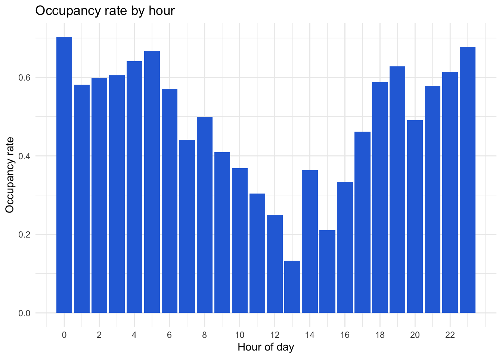
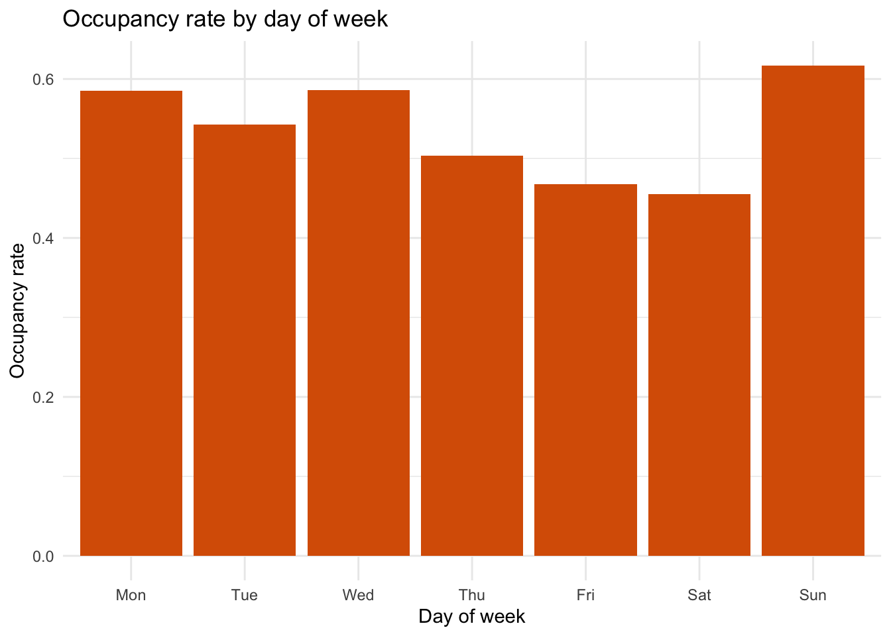
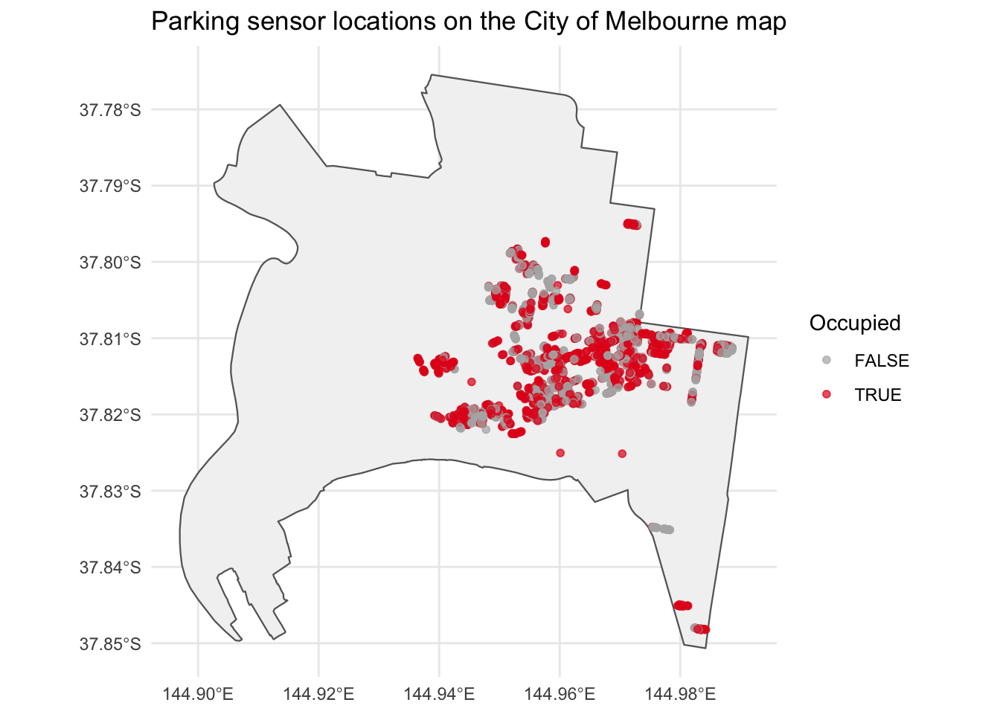
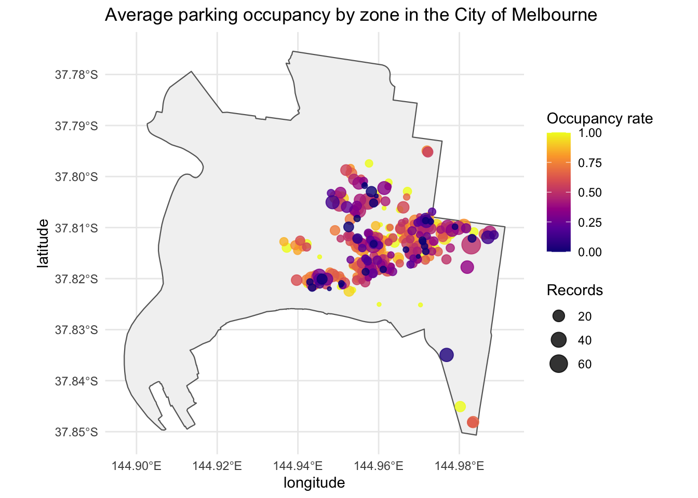

dir.create(here::here("raw_data"), showWarnings = FALSE)
dir.create(here::here("data"), showWarnings = FALSE)Assignment 4
Parking congestion in Melbourne CBD
1 Data Details
1.0.1 Topic of this work
Which Melbourne parking zones are most consistently congested, and how does that congestion vary by time of day and day of week?
1.0.2 Why this topic
I chose this topic because I live near the CBD, whenever I have friends coming over or we plan a night out, figuring out parking is always a painpoint and an item of discussion that has caused many plans to fall through before, which is what led me to investigate this topic and shape my research question around parking congestion. This topic is engaging to me because it connects everyday urban movement data with practical questions about how city space is used, which makes the project practical and interesting.
1.0.3 Data description
I used the datasets described below to analyse recurring parking congestion in Melbourne. Together, these files provide timestamped bay status information and spatial location data, which makes them suitable for both time-based and map-based analysis.
Datasets:
On-street Parking Bay Sensors
- Source: City of Melbourne Open Data Portal.
- Link: (data.melbourne.vic.gov.au). On-street Parking Bay Sensors .
- Content: Live parking bay sensor data showing whether a vehicle is present or not present, along with spatial coordinates and kerbside ID.
- Data type: Observational administrative open data, effectively a live operational record rather than a sample or experiment.
- Update frequency: Approximately every two minutes.
- Licence: CC BY / Creative Commons Attribution 4.0.
- Limitations: Depends on sensor reliability, may contain missing values, and reflects bay status rather than the full context of driver behaviour.
- Privacy/Ethics: Low privacy risk because the data concerns parking bays rather than named individuals, but the analysis will remain aggregated and will not attempt to identify vehicles or people.
On-street Parking Bay Sensors Spatial File (GeoJSON or SHP)
- Source: Same City of Melbourne dataset page.
- Link: (data.melbourne.vic.gov.au). On-street Parking Bay Sensors .
- Content: Spatial representation of the parking sensor data that can be used for mapping sensor locations.
- Data type: Spatial open data.
- Licence: CC BY / Creative Commons Attribution 4.0.
- Limitations: Spatial points help show location, but they do not on their own explain why some areas are more congested than others.
- Privacy/Ethics: Public infrastructure data with low privacy risk.
Municipal Boundary
- Source: City of Melbourne / Victorian Government Data Directory.
- Link: [Municipal boundary](https://data.melbourne.vic.gov.au/explore/dataset/municipal-boundary/.
- Content: Boundary of the City of Melbourne municipality used as the basemap polygon for the spatial plots.
- Data type: Spatial boundary data.
- Use in project: Provides a recognisable Melbourne map so the parking points can be plotted on the municipality rather than on blank coordinate axes.
1.0.4 Data download
The following section describes how the data can be downloaded from its original sources and the initial processing steps used for analysis.
Downloading Dataset 1
url_csv <- "https://data.melbourne.vic.gov.au/explore/dataset/on-street-parking-bay-sensors/download/?format=csv&timezone=Australia/Melbourne&lang=en"
destfile_csv <- here::here("raw_data/on-street-parking-bay-sensors.csv")
download.file(url_csv, destfile_csv, mode = "wb")
parking_sensor_raw <- read_delim(
destfile_csv,
delim = ";",
show_col_types = FALSE
) |>
clean_names()If the direct download link changes, the file can be downloaded manually from the dataset page and saved as raw_data/on-street-parking-bay-sensors.csv.
Downloading Dataset 2
url_geojson <- "https://data.melbourne.vic.gov.au/explore/dataset/on-street-parking-bay-sensors/download/?format=geojson&timezone=Australia/Melbourne&lang=en"
destfile_geojson <- here::here("raw_data/on-street-parking-bay-sensors.geojson")
download.file(url_geojson, destfile_geojson, mode = "wb")
parking_sensor_geo <- st_read(destfile_geojson, quiet = TRUE)If working with the downloaded shapefile instead, all associated files (.shp, .shx, .dbf, .prj, .cpg) should be stored together in the same folder before reading the .shp file.
# If using a shapefile instead of geojson:
# parking_sensor_geo <- st_read(here::here("raw_data/on-street-parking-bay-sensors/on-street-parking-bay-sensors.shp"))Downloading the Melbourne municipal boundary
boundary_url <- "https://data.melbourne.vic.gov.au/api/v2/catalog/datasets/municipal-boundary/exports/geojson"
boundary_file <- here::here("raw_data/municipal-boundary.geojson")
download.file(boundary_url, boundary_file, mode = "wb")
melbourne_boundary <- st_read(boundary_file, quiet = TRUE)The municipal boundary file provides the polygon boundary of the City of Melbourne municipality and is used as the background map for the parking plots
1.0.5 Data cleaning and preparation
Before analysing congestion, the raw parking sensor data needs to be converted into a form that is easier to summarise. That includes parsing timestamps properly, extracting useful time-based variables such as hour and day of week, converting latitude and longitude into numeric form, and creating a simple logical indicator that marks whether a bay is occupied.
The main steps used to process the data are listed below.
- Import the raw CSV sensor data.
- Import the geojson or shapefile spatial data.
- Clean variable names.
- Parse timestamp fields into proper datetime format.
- Create derived variables such as hour, weekday, and date.
- Recode
status_descriptioninto an occupied indicator. - Remove or flag missing zone values.
- Summarise occupancy by zone, hour, and weekday.
- Save the cleaned analysis file separately from the raw data.
parking_clean <- parking_sensor_raw |>
mutate(
lastupdated = ymd_hms(lastupdated),
status_timestamp = ymd_hms(status_timestamp),
hour = hour(status_timestamp),
day_of_week = wday(status_timestamp, label = TRUE, week_start = 1),
date = as_date(status_timestamp),
occupied = case_when(
str_trim(str_to_lower(status_description)) == "present" ~ TRUE,
str_trim(str_to_lower(status_description)) == "unoccupied" ~ FALSE,
TRUE ~ NA
)
) |>
separate(location, into = c("latitude", "longitude"), sep = ",", remove = FALSE) |>
mutate(
latitude = as.numeric(str_trim(latitude)),
longitude = as.numeric(str_trim(longitude))
) |>
filter(
!is.na(zone_number),
!is.na(status_timestamp),
!is.na(hour),
!is.na(day_of_week),
!is.na(latitude),
!is.na(longitude),
!is.na(occupied)
)
parking_clean# A tibble: 3,149 × 12
lastupdated status_timestamp zone_number status_description
<dttm> <dttm> <dbl> <chr>
1 2025-01-22 03:44:37 2024-10-11 04:06:49 7539 Unoccupied
2 2025-01-22 03:44:37 2024-10-01 23:22:55 7550 Present
3 2025-01-22 03:44:37 2024-10-01 22:50:25 7550 Unoccupied
4 2025-01-22 03:44:37 2024-10-01 22:48:56 7549 Unoccupied
5 2025-01-22 03:44:37 2024-10-01 22:53:36 7549 Unoccupied
6 2025-01-22 03:44:37 2024-10-01 22:33:54 7550 Present
7 2025-01-22 03:44:37 2024-10-11 02:41:57 7539 Present
8 2025-01-10 02:44:36 2024-08-21 04:13:39 7392 Unoccupied
9 2024-12-30 00:44:37 2024-08-18 08:23:46 7394 Unoccupied
10 2025-01-10 02:44:36 2024-08-14 09:22:05 7392 Unoccupied
# ℹ 3,139 more rows
# ℹ 8 more variables: kerbsideid <dbl>, location <chr>, latitude <dbl>,
# longitude <dbl>, hour <int>, day_of_week <ord>, date <date>, occupied <lgl>write_csv(parking_clean, here::here("data/parking_processed.csv"))The cleaning step also removes rows with missing values in the key analytical fields. Based on the output shown below, the cleaned dataset contains 3149 rows and 12 columns, which is the dataset used in the later summaries and visualisations
Since spatial summaries are needed, the processed summaries can later be joined to the spatial data. The City of Melbourne states that the live sensor dataset joins to the parking bays dataset by marker_id, and the sensor dataset joins to the parking restrictions dataset by bay_id.
The GeoJSON version of the sensor dataset is especially useful because it already contains the live parking records together with a geometry column. That makes it more suitable for mapping than relying only on split text coordinates.
parking_sensor_geo_clean <- parking_sensor_geo |>
mutate(
lastupdated = ymd_hms(lastupdated),
status_timestamp = ymd_hms(status_timestamp),
hour = hour(status_timestamp),
day_of_week = wday(status_timestamp, label = TRUE, week_start = 1),
date = as_date(status_timestamp),
occupied = case_when(
str_trim(str_to_lower(status_description)) == "present" ~ TRUE,
str_trim(str_to_lower(status_description)) == "unoccupied" ~ FALSE,
TRUE ~ NA
)
) |>
filter(
!is.na(zone_number),
!is.na(status_timestamp),
!is.na(hour),
!is.na(day_of_week),
!is.na(occupied)
)This spatial version of the live sensor data is used in the blog post maps because it allows the point locations to be plotted directly from the geometry column rather than from manually split coordinate fields.
1.0.6 Inspecting the data
glimpse(parking_clean)Rows: 3,149
Columns: 12
$ lastupdated <dttm> 2025-01-22 03:44:37, 2025-01-22 03:44:37, 2025-01-…
$ status_timestamp <dttm> 2024-10-11 04:06:49, 2024-10-01 23:22:55, 2024-10-…
$ zone_number <dbl> 7539, 7550, 7550, 7549, 7549, 7550, 7539, 7392, 739…
$ status_description <chr> "Unoccupied", "Present", "Unoccupied", "Unoccupied"…
$ kerbsideid <dbl> 66222, 66010, 66032, 66063, 66026, 66074, 66237, 93…
$ location <chr> "-37.81164001991529,144.96061716652716", "-37.80994…
$ latitude <dbl> -37.81164, -37.80994, -37.81036, -37.81021, -37.810…
$ longitude <dbl> 144.9606, 144.9664, 144.9649, 144.9656, 144.9653, 1…
$ hour <int> 4, 23, 22, 22, 22, 22, 2, 4, 8, 9, 2, 20, 2, 23, 3,…
$ day_of_week <ord> Fri, Tue, Tue, Tue, Tue, Tue, Fri, Wed, Sun, Wed, W…
$ date <date> 2024-10-11, 2024-10-01, 2024-10-01, 2024-10-01, 20…
$ occupied <lgl> FALSE, TRUE, FALSE, FALSE, FALSE, TRUE, TRUE, FALSE…glimpse(parking_sensor_geo_clean)Rows: 3,149
Columns: 11
$ status_timestamp <dttm> 2024-10-11 15:06:49, 2024-10-02 09:22:55, 2024-10-…
$ zone_number <int> 7539, 7550, 7550, 7549, 7549, 7550, 7539, 7392, 739…
$ lastupdated <dttm> 2025-01-22 14:44:37, 2025-01-22 14:44:37, 2025-01-…
$ kerbsideid <int> 66222, 66010, 66032, 66063, 66026, 66074, 66237, 93…
$ status_description <chr> "Unoccupied", "Present", "Unoccupied", "Unoccupied"…
$ location <list> <-37.81164, 144.96062>, <-37.80994, 144.96636>, <-…
$ geometry <POINT [°]> POINT (144.9606 -37.81164), POINT (144.9664 -…
$ hour <int> 15, 9, 8, 8, 8, 8, 13, 14, 18, 19, 13, 7, 13, 10, 1…
$ day_of_week <ord> Fri, Wed, Wed, Wed, Wed, Wed, Fri, Wed, Sun, Wed, W…
$ date <date> 2024-10-11, 2024-10-02, 2024-10-02, 2024-10-02, 20…
$ occupied <lgl> FALSE, TRUE, FALSE, FALSE, FALSE, TRUE, TRUE, FALSE…glimpse(melbourne_boundary)Rows: 1
Columns: 10
$ geo_point_2d <chr> "{ \"lon\": 144.9436365307524, \"lat\": -37.8107306254816…
$ mccid_gis <int> 1
$ maplabel <chr> NA
$ name <chr> "City of Melbourne"
$ xorg <chr> "GIS Team"
$ mccid_str <chr> NA
$ xsource <chr> "Mapbase"
$ xdate <date> 2008-07-01
$ mccid_int <chr> "0"
$ geometry <MULTIPOLYGON [°]> MULTIPOLYGON (((144.9404 -3...The cleaned datasets contains 3149 observations and 12 variables in the main CSV file and 3149 observations and 11 in the cleaned GeoJSON dataset, which indicates that the filtering and recoding steps have left a sizeable working dataset for analysis. The preview also shows the key variables needed later, including timestamps, zone identifiers, occupancy labels, and coordinate values
1.0.7 Creating the data dictionary file
data_dictionary <- tibble(
variable = c(
"lastupdated",
"status_timestamp",
"zone_number",
"status_description",
"kerbsideid",
"location",
"hour",
"day_of_week",
"date",
"occupied"
),
description = c(
"Time the record was last updated",
"Timestamp of the parking sensor reading",
"Parking zone identifier",
"Description of whether a car is present or not present",
"Kerbside identifier",
"Coordinate/location field",
"Hour extracted from status_timestamp",
"Weekday extracted from status_timestamp",
"Calendar date extracted from status_timestamp",
"Logical occupied/vacant indicator created for analysis"
),
role_in_analysis = c(
"Checks update recency",
"Main time variable",
"Main grouping variable",
"Defines congestion proxy",
"Optional finer location grouping",
"Supports mapping",
"Used for hourly summaries",
"Used for weekly summaries",
"Used for date-based summaries",
"Main congestion measure"
)
)
write.xlsx(data_dictionary, here::here("data/data-dictionary.xlsx"))1.0.8 Files included in submission
The submission will include:
- the raw CSV file;
- the raw GeoJSON or shapefile;
- the Melbourne municipal boundary GeoJSON;
- the processed CSV file;
- a readme file describing the source and folder structure;
- and a data dictionary saved as an
.xlsxfile.
This documentation makes it clear what was downloaded, what was changed, and what was used in the analysis.
2 Blog post
2.1 Why take a look at parking congestion data?
Parking in the Melbourne CBD is a familiar source of frustration. It affects everyday social plans, visitor access, and how long people spend circling for a spot. Because the City of Melbourne publishes live data from thousands of parking sensors, it is possible to move beyond anecdotal complaints and examine actual patterns of parking pressure.
This blog post asks three connected questions:
Which zones appear most consistently occupied?
How does occupancy vary by hour?
Does occupancy also vary across the days of the week?
The emphasis is on repeated patterns rather than one-off counts, since zones that stay busy across many windows matter more than brief spikes. By combining grouped summaries and maps, the analysis identifies not just where parking is full, but where it appears persistently full over time.
2.2 Data Sources for Analysing Parking Occupancy in Melbourne
Data for visualising parking occupancy in Melbourne is available through the City of Melbourne’s public open data portal. The main dataset used here is the parking sensor dataset, which records whether a bay is occupied or unoccupied at specific timestamps. The spatial file provides the coordinates needed for mapping, and the parking bays file serves as a supporting source for interpretation.
Here, congestion is measured as repeated occupied readings, with “consistent congestion” referring to zones that remain occupied across many hour-by-zone windows. This excludes turnover or duration, an important limitation, but still offers a clear starting point.
2.3 What does the data tell us?
The City of Melbourne notes that the sensor dataset records whether a vehicle is present or not present and includes spatial coordinate information and kerbside ID. It also states that the data is updated frequently and can be affected by outages or delays, so the lastupdated field is useful for checking freshness.
The first useful summary is the zone-level occupancy table shown below.
2.3.1 Aspect 1: Zone patterns
# A tibble: 10 × 3
zone_number records occ_rate
<dbl> <int> <dbl>
1 7638 17 1
2 7614 15 1
3 7910 14 1
4 7514 11 1
5 7220 10 1
6 7636 9 1
7 7195 8 1
8 7089 7 1
9 7243 7 1
10 7252 7 1The top ten zones all have an occupancy rate of 1. This means every recorded observation for those zones in the cleaned sample was classified as occupied. Among these, zone 7716 stands out with 25 records. Other highly occupied zones also show complete occupancy but with fewer observations.
This result suggests that some zones were effectively always full during the observed sample but the records column also matters since a zone with identical occupancy across many observations is stronger evidence of persistent congestion than one based on only a handful of rows.
In general though, all these zones have relatively small record counts, which means their perfect occupancy rates, although an informative result, should be interpreted with some caution. It suggests that some zones in the dataset are consistently busy and may represent areas of especially high parking pressure.
However, a high mean occupancy on its own does not distinguish between zones that are always busy and zones that only appear in a limited subset of time periods. A second summary considers persistence across hourly windows rather than just the overall average.
# A tibble: 10 × 2
zone_number persist_share
<dbl> <dbl>
1 7002 1
2 7015 1
3 7019 1
4 7089 1
5 7096 1
6 7182 1
7 7185 1
8 7189 1
9 7191 1
10 7195 1The persistence table shows that the top ten zones all have a persist_share of 1. This means these zones were above the median hourly occupancy threshold in every observed hourly period used in the calculation.
This is important because it shows that some zones are not merely busy on average, but repeatedly busy across time. The overlap between this persistence table and the earlier occupancy ranking, like zone 7089, suggests that a smaller subset of zones experiences more durable congestion than the rest of the network.
These summaries make it possible to distinguish between zones that are always busy and zones that are only occasionally busy.
2.3.2 Aspect 2: How does occupancy change through the day?
The hourly summary shows when parking demand is strongest across the day. This helps answer whether congestion is tied to business hours, evening activity, or a broader all-day pattern.
# A tibble: 24 × 2
hour occ_rate
<int> <dbl>
1 0 0.703
2 1 0.581
3 2 0.598
4 3 0.605
5 4 0.642
6 5 0.667
7 6 0.571
8 7 0.440
9 8 0.5
10 9 0.410
# ℹ 14 more rows
The hourly pattern is clearly uneven. Occupancy peaks around midnight, overnight, and in the early hours of the morning, with 3 AM reaching roughly 0.77, which suggests that busy periods are not limited to standard business hours. It remains moderate through the early morning, then gradually declines through the late morning and early afternoon.
The lowest point appears around hour 13, where the occupancy rate falls to about 0.15. After that, occupancy begins to rise again through the late afternoon and remaining elevated into the evening.
This suggests that, in this sample, the most difficult time to find parking is likely to be late afternoon and evening rather than the middle of the day. That is a useful finding because it suggests the pressure on parking may be linked not only to daytime work activity, but also to later city activity.
2.3.3 Aspect 3: How does occupancy change by day of week
The next step is to check whether occupancy patterns also differ by weekday. Weekday patterns help distinguish work-related parking demand from weekend or leisure-related demand. If the busiest days differ from the busiest hours, that suggests parking congestion is shaped by more than one urban activity pattern.
# A tibble: 7 × 2
day_of_week occ_rate
<ord> <dbl>
1 Mon 0.585
2 Tue 0.543
3 Wed 0.586
4 Thu 0.503
5 Fri 0.468
6 Sat 0.455
7 Sun 0.617The weekday summary shows a clear difference between weekdays and weekends. Monday has the highest observed occupancy rate at about 0.585, while Friday is the lowest at about 0.468 and Sunday remains below 0.4

The bar chart reinforces that result visually. Weekday occupancy is consistently higher than weekend occupancy, with the sharpest drop occurring on Saturday, and only a slight recovery on Sunday. Thursday is also somewhat lower than the other weekdays, but still noticeably above the weekend values.
This suggests that the strongest parking pressure in the sample is associated more with weekday urban activity than with weekend demand. In other words, the busiest days are not evenly spread across the week.
2.3.4 Aspect 4: Spatial pattern
Finally, it is useful to plot the locations of the parking observations on a Melbourne map. The spatial view is important because it shows where the persistent congestion is located, not just when it happens. This directly supports the original question by linking repeated occupancy to place, not only time.

This map places the parking sensor observations on the municipal boundary of the City of Melbourne and while it does not by itself prove which zones are the most persistently congested, it does provide useful context about where occupied and unoccupied observations are concentrated within the municipality. The spatial plot shows that the sensor points are clustered within a fairly concentrated part of the Melbourne municipal boundary, rather than being evenly spread across the entire map. The red points, which indicate occupied observations, clearly outnumber the grey unoccupied points in the central cluster, visually matching the earlier summaries showing occupancy rates above 0.5 for many periods.
2.3.5 Aspect 5: Zone occupancy map

This second map is more directly tied to the research question because it shows the average occupancy rate by location rather than a single raw occupied or unoccupied state. That makes it easier to spot zones that appear persistently busy rather than temporarily full.
2.4 Conclusion- So what?
Going down the rabbit hole of understanding the seemingly inexplicable parking behavior in Melbourne turned a familiar local frustration into a structured data analysis using City of Melbourne parking data.
Overall, the analysis suggests that parking congestion in this sample is both spatially concentrated and strongly time-dependent. Several zones have an occupancy rate of 1.00, and several others also have a persistence score of 1.00, meaning that repeated congestion is not confined to a single isolated case.
The time-of-day pattern is especially striking. Occupancy dips in the middle of the day and then rises into the evening and early morning, peaking around 3:00. That means the most intense parking pressure in this sample does not occur at midday, but at night.
The weekday pattern is also clear. Monday has the highest occupancy, while Saturday has the lowest, and weekends overall are noticeably less occupied than weekdays. Together, these results suggest that recurring parking pressure in this dataset is more closely associated with weekday city activity and evening demand than with weekend peaks.
The first map helps show where these observations are happening. Rather than being evenly spread across the full municipal boundary, the points are clustered in a more central part of Melbourne, and occupied points are visually common within that cluster. This supports the idea that the occupancy patterns seen in the summaries are tied to a concentrated (CBD and central-eastern) part of the city rather than being uniformly distributed everywhere.
The second map makes the spatial interpretation clearer by aggregating occupancy at the zone level. Zones with higher occupancy rates stand out in brighter colours, while point size shows that some of these zones are supported by more observations than others. This is important because it adds a second layer of evidence: not only do some zones look busy in the tables, but those same high-occupancy zones also appear as spatially identifiable parts of the map.
In summary, the tables, charts, and maps all point in the same direction. Parking congestion in this sample does not appear to be evenly spread across all zones or all times. Instead, it is concentrated in central zones, stronger on weekdays, and especially high in the evening.
3 Behind the Scenes
3.1 1) Data processing that wasn’t “sexy”
A large part of this project involved unglamorous data processing work that would not usually make it into the blog post itself. The biggest piece of drudgery was getting the raw files into a usable format, especially because the CSVs were separated by semicolons rather than commas, which caused the data to load incorrectly at first. I also had to clean variable names, convert timestamps into datetime objects, create new variables like hour, weekday, and date, and check for missing or inconsistent values before any real analysis could begin. Another repetitive task was working out which dataset should be used for which part of the analysis, because some files overlapped in purpose. While these steps were tedious, they were also important because they made the later summaries and visualisations much easier to produce and trust.
3.2 2) Challenges faced and limitations
One of the biggest challenges was deciding how to structure the analysis once I realised that the datasets were not equally useful. At first, I expected to rely on all of them, but after inspection I had to narrow the scope and focus on the live sensor data and its GeoJSON version because they were more current and more directly useful than the parking bays dataset. I also ran into coding issues when working with the spatial data, especially around how to map point geometry properly and how to combine spatial and non-spatial summaries without introducing errors. Another challenge was defining “consistent congestion” in a way that was meaningful rather than just picking the busiest zones by average occupancy. I am most proud of solving the workflow problem by separating the tabular summaries from the spatial analysis, which made the final structure clearer and more defensible.
Here, I was only able to scratch the surface, but in the future I’d like to analyse:
whether the same zones remain highly occupied across a longer range of dates rather than only within the current sample
whether weekday and weekend parking patterns differ more sharply when separated by zone
whether nearby restaurants, offices, events, or other land uses help explain persistent congestion
and whether a more formal congestion score could be developed by combining occupancy, persistence, and sample size into one measure.
3.3 3) Imperfect parts and future improvement
There are still some imperfect parts of this analysis that I would improve if I had more time. The biggest limitation is that the occupancy measure is based on available sensor readings rather than true parking duration, turnover, or driver behaviour, so it gives a useful but incomplete picture of congestion. Some zones also have small numbers of observations, which means a perfect occupancy rate does not always mean the zone is consistently full across a large sample. Another limitation is that the spatial analysis is still fairly simple, because it shows where congestion appears but does not explain why those zones are busier than others. In future, I would like to extend the time range, compare zones more systematically, and bring in other context such as nearby land use, events, or business activity to better explain the patterns.
3.4 4) AI as a supporting tool
I used AI as a support tool rather than as a replacement for my own judgement. One useful part of using AI was that it helped me realise that the CSV and GeoJSON files had different strengths and work through through how to simplify my workflow, so I could separate the tabular summaries from the spatial mapping instead of forcing everything into one pipeline. It was a great asset in that regard because it improved both the structure of the analysis and my understanding of how to work with different data formats more effectively. It was also quite useful when I was trying to decide which datasets were actually worth using, because it helped me think through the difference between a dataset that was available and one that was genuinely useful for the question.
AI was not always reliable on its own though, so I had to check and refine a lot of its suggestions. For example, I verified dataset details, checked whether the spatial file actually contained geometry, and corrected the example codes it would give me to fit my dataset and research question, and further iterate and refine it myself to get the outputs I desired. I also questioned some of the analysis suggestions when they looked too complicated or when they duplicated information unnecessarily. In those cases, I used AI more like a brainstorming partner than an authority, and I made sure the final choices still made sense for the assignment.
3.5 5) Iterative process
V1 Reflection:
In this early version, I focused only on getting the data loaded into R. Instead of manually downloading the dtasets from the City of Melbourne website as I did on the submission for early feedback, and then loading them into R, this time I tried to download data directly from the url on Rstudio. However, this time, I noticed that when I download the datasets from the url using R markdown, the downloaded CSV files used a semicolon delimiter, so the dataset loaded as a single column. This is something I will have to fix before proceeding with any further analysis, so at this stage, the main focus is simply getting the file structure and dataset loading working.
V2 Reflection:
In this version, after realizing the delimiter problem, I fixed the import issue from the first draft using read_delim(..., delim = ";") and successfully imported the data into a format that could actually be analysed instead of being read as one long column. I then began cleaning the key variables so the timestamps, zone numbers, and occupancy values could be used properly and also started creating the time-based fields like hour and day of week.
Another thing I learned at this stage was that the location field needed extra wrangling before it could be used in maps. Splitting coordinates into latitude and longitude and checking for missing values took a bit of trial and error, but it was necessary before I could move on to any spatial visualisation. This version still feels very preliminary, but is a major step forward because the dataset is now structured enough to support summaries by time and place and I’ve also added a data dictionary file to supplement understanding.
V3 Reflection:
In this version, I moved beyond just cleaning the data and started building the actual analysis, commentating it along the way with my blog post. The biggest change from the earlier version was that I could now summarise occupancy by zone and time, which meant I was finally able to answer the research question in a more direct way. Additionally, I added more details about the sources and file structure in the README file and also decided to add a spatial aspect to my project by incorporating the municipal boundary and plotting the parking observations on a map, but haven’t implemented it yet.
This stage also showed me that I needed a clearer way of defining “consistent congestion,” because just looking at the busiest zones was not enough. That led me to start thinking more carefully about persistence across time, rather than only average occupancy. At this point, the project is still missing some refinement, but it has already become much stronger because the analysis now combined time-based summaries, which gave me a better sense of what the final report would look like.
V4 Reflection:
In this version, I moved to a more complete analysis that used both the tabular sensor data and the spatial sensor file in a more intentional way and went a step further to interpret and communicate my findings as succinctly as I can. The biggest change from V3 was that I realized that rather than treating spatial data as an afterthought and trying to parse and derive it from the CSV data, instead using the spacial data from GeoJSON directly in the mapping sections while the CSV stayed the main source for zone-level summaries and time-based patterns felt a lot more intuitive and would probably make for a more reliable frame for analysis.
Another important change was that I became more selective about which supporting datasets were actually worth including. After checking the parking bays dataset more carefully, I decided it was not the best fit for the final analysis because it only extended to 2024, which made it older than the live sensor datasets that reached 2026, and it also did not add much beyond what the spatial sensor file already provided. That helped narrow the project to the datasets that were most current and most useful for answering the question.